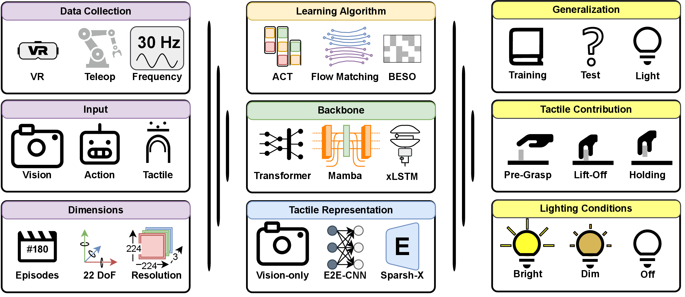
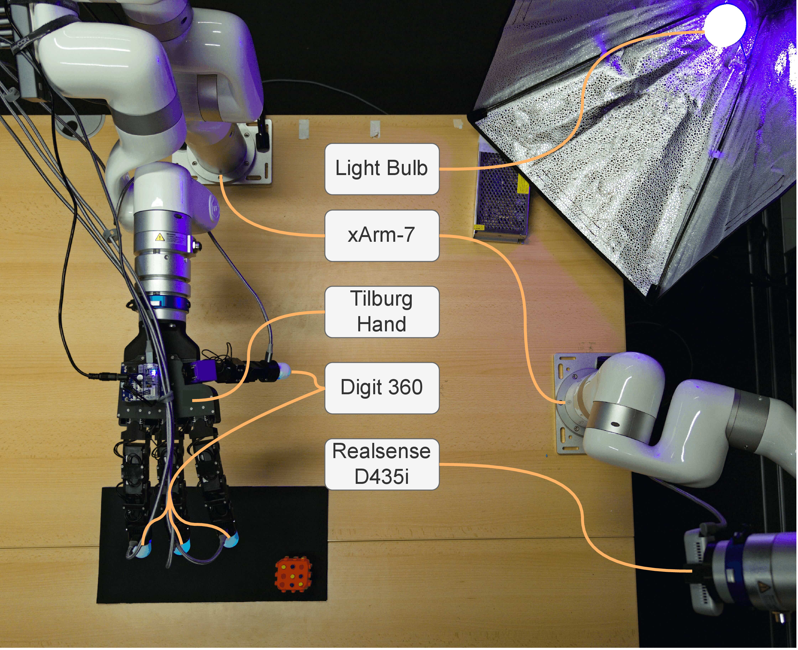
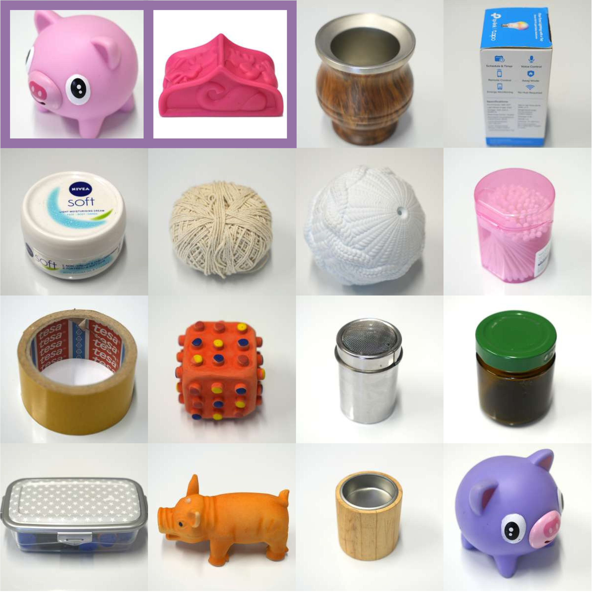
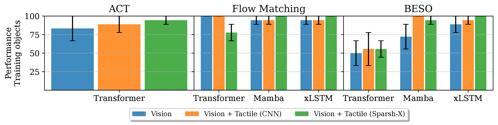
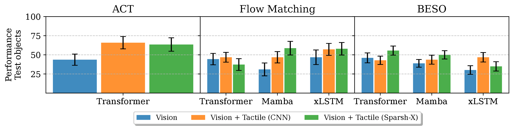
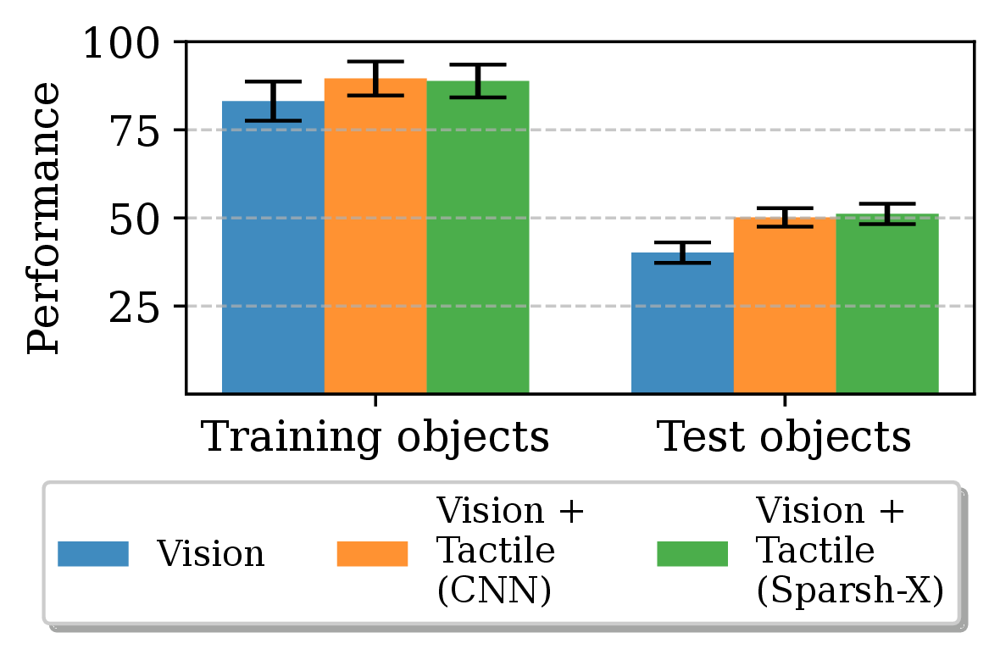
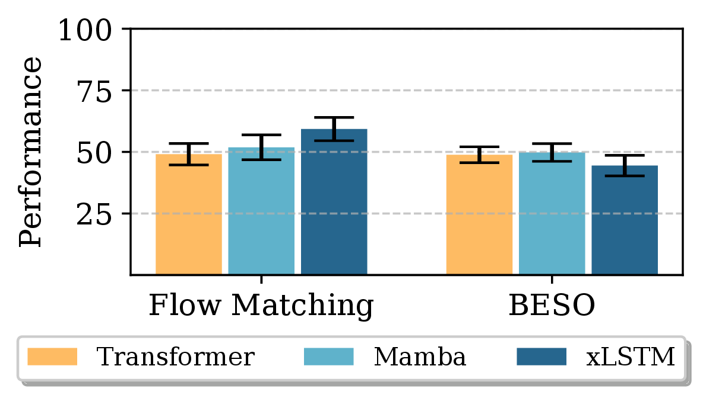
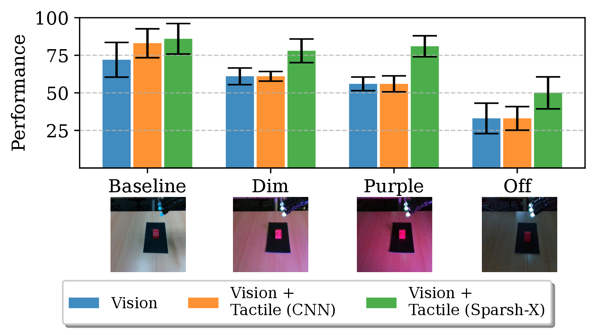
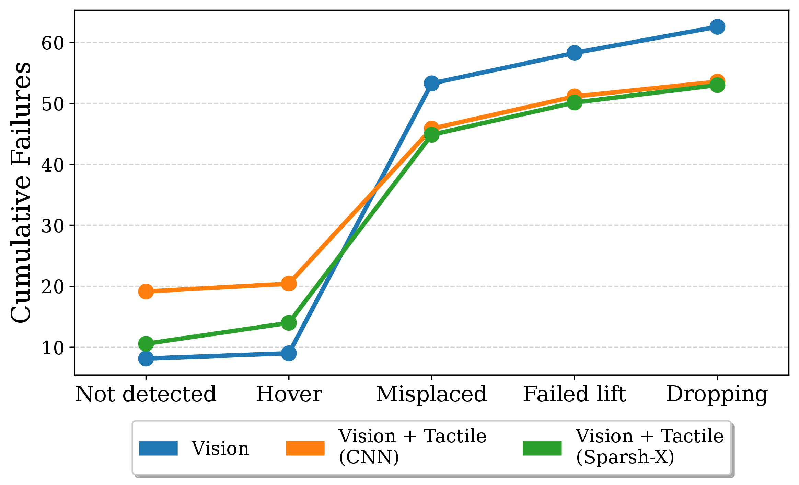

Abstract
Overview Video
Method Overview
We present a systematic study evaluating multiple state-of-the-art imitation learning algorithms, backbone architectures, and tactile representations for dexterous grasping. Our approach uses VR teleoperation with a Digit 360-equipped multi-finger hand to collect demonstrations, then trains policies under identical conditions to isolate the contribution of tactile sensing from architectural choices. We evaluate three algorithms (ACT, Flow Matching, BESO) across three backbones (Transformer, Mamba, xLSTM) with three tactile representations (Vision-only, end-to-end CNN, pretrained Sparsh-X), yielding 21 policy variants tested across 28 comparison pairs.

Hardware Platform and Data Collection: We develop a VR-based teleoperation system using the Meta Quest 3 to track human operator movements, collecting 180 demonstrations at 30 Hz with the xArm-7 robot arm mounting a Tilburg hand equipped with four Digit 360 tactile sensors. The dataset consists of two training objects (marked in purple) made of firm plastic, with ten grasps in nine different positions each. Object Set: We evaluate on 16 objects total — 2 training objects and 14 everyday household test objects made of different materials, testing generalization beyond the training distribution.


Results
We evaluate all 21 policy variants on both training and test objects, with each policy performing 144 grasps (16 objects × 9 positions). Our key finding: tactile signals match or improve upon vision-only performance in 25 out of 28 cases, with the benefit becoming more pronounced when generalizing to novel objects. The performance gap between training and test objects narrows when tactile signals are included, suggesting that contact-grounded observations provide appearance-invariant information that supports generalization beyond the demonstrated object set.


Tactile Representation Comparison: While the performance is more similar on training objects with a 6% difference [≈83.14% Vision-only, ≈89.57% Tactile (CNN), ≈88.86% Tactile (Sparsh-X)], this gap grows to an 11% higher success rate when facing test objects [≈40.14% Vision-only, ≈50.14% Tactile (CNN), ≈51.14% Tactile (Sparsh-X)]. The CNN and Sparsh-X representations perform within 1% of each other on average, indicating that for this grasping task, both task-specific learned features and pretrained embeddings capture comparable contact information.
Algorithm and Backbone Analysis: We observe that xLSTM achieves a 7% and 10% higher success rate when compared to Mamba and Transformer using Flow Matching respectively, yet it performs 5% and 4% worse for the BESO algorithm. No single backbone emerges as universally advantageous across both learning algorithms, highlighting the importance of algorithm-backbone interaction.


Environmental Robustness: We evaluate four lighting conditions: baseline, dimmed with purple side light, purple-only color perturbation, and fully darkened room. Average grasping performance decreases across all policies as lighting conditions worsen, confirming the expected sensitivity of vision-based control to appearance shifts. However, the Sparsh-X encoded tactile representation degrades considerably less than the other two, demonstrating that pretrained contact representations provide meaningful robustness when visual information becomes unreliable.
Failure Mode Analysis: The failure analysis reveals that the benefit of touch is not uniformly distributed across the grasping sequence. The largest improvement occurs at the initial approach stage: tactile variants reduce Misplaced grasp attempts from ≈44.3 to ≈23.3 (CNN) and ≈31.9 (Sparsh-X) compared to vision-only baselines. Once the robot establishes contact, differences between tactile and vision-only variants diminish to within one failure case across Failed lift and Dropping. This indicates that touch primarily provides the contact-geometry signal needed to approach the object with a viable grasp configuration, rather than aiding in-hand stabilization.


Acknowledgements
This work was partly supported by the project Genius-Robot (01IS24083) funded by the Federal Ministry of Research, Technology and Space (BMFTR), by BMFTR in the DAAD project 57616814 (SECAI, School of Embedded Composite AI), by BMFTR under the Robotics Institute Germany (RIG), by the German Research Foundation (DFG) under the Cluster of Excellence CARE: Climate-Neutral And Resource-Efficient Construction (EXC 3115, project number 533767731) and by the Deutsche Forschungsgemeinschaft (DFG, German Research Foundation) (448648559). The authors gratefully acknowledge the computing time provided on the high-performance computer HoreKa by the National High-Performance Computing Center at KIT and by Gauss Centre for Supercomputing e.V. (www.gauss-centre.eu) for GCS Supercomputer JUPITER at Jülich Supercomputing Centre (JSC). We furthermore thank the ZIH at TU Dresden for providing computing resources. We acknowledge the use of Claude Opus and Qwen 3.7 to support code development. The outputs were used in Section V to generate supportive scripts. All outputs were validated by the authors of this paper.
Author Contributions (CRediT)
Conceptualization: NL, PV, KN, RC; Data curation: NL; Formal Analysis: NL, PV; Funding acquisition: RL, RC; Investigation: NL, PV; Methodology: NL, PV, JS; Project administration: RL, RC; Resources: RL, RC; Software: NL, PV, JS; Supervision: KN, RL, RC; Validation: NL, PV, JS; Visualization: NL; Writing – original draft: NL, PV, JS; Writing – review & editing: NL, PV, JS, RL, RC